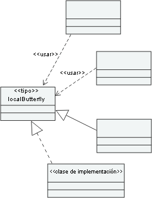
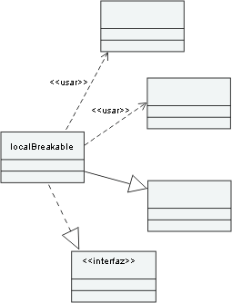

| Directriz: Descubrimiento, análisis y control de arquitectura |
 |
|
| Elementos relacionados |
|---|
IntroducciónEn varias tareas de RUP, se examina en profundidad la necesidad de examinar el modelo de diseño emergente, realizar suposiciones sobre varios aspectos de calidad y, a continuación, si es necesario, refactorizar el modelo. También es importante poder mantener la integridad de la arquitectura de un sistema una vez que se ha pasado a implementación, para garantizar que las limitaciones de arquitecura y diseño no se infringen y que el sistema, tal como se ha implementado, sigue alineándose con la visión de la arquitectura. En RUP, estos puntos de control principales se llevan a cabo en las tareas: Revisar la arquitectura, Revisar el diseño y Revisar código. Un problema diferente, aunque relacionado con esto, surge durante la síntesis de la arquitectura y del diseño en las tareas siguientes: Análisis de la arquitectura (véase Desarrollar visión general de arquitectura y Inspeccionar activos disponibles) y Incorporar elementos de diseño existentes, se aconseja al arquitecto del software que busque oportunidades para reutilizar activos de diseño y código existentes e incorporarlos en el modelo de diseño después de la ingeniería revertida, en caso necesario. A menos que los activos reutilizados incluyan algún tipo de certificado de calidad, el arquitecto del software deseará examinarlos como si se tratarán de diseño y código recientemente creados. En ambos casos, las necesidades derivadas de Architect Software son las mismas que para el análisis estático:
En teoría, estas necesidades pueden satisfacerse a través de la inspección. En la práctica, en el caso de sistemas mayores y más complejos, es esencial utilizar algún tipo de ayuda automática. En las secciones siguientes se proporciona información sobre estos temas y ejemplos del soporte de herramienta. Descubrimiento y recuperación de arquitecturaUn poco de historiaEn el desarrollo de Greenfield, la arquitectura de software surge a partir de los requisitos y del contexto de dominio y de las convenciones (incluidos patrones y mecanismos); el artefacto Especificaciones adicionales juega un papel importante en la determinación de la arquitectura. Este proceso de creación de la arquitectura del software a veces se denomina descubrimiento, ya que en raras ocasiones existe una correlación mecánica y directa con la arquitectura a partir de los requisitos. Sin embargo, en este caso, utilizamos descubrimiento con un sentido diferente, para describir el proceso de ayudar al arquitecto del software a comprender una aplicación o un fragmento de aplicación existente en formato codificado. La recuperación de la arquitectura es mas ambiciosa: a través de la recuperación, no sólo intenta hacer que el arquitecto del software comprenda una aplicación, sino que también que extraiga un modelo de dicha aplicación, idealmente en un nivel de abstracción compatible con el modelo de diseño. A continuación, existe la posibilidad de combinar estos modelos y, a través de Definición de término: transformación y generar una nueva aplicación, quizás para una Definición de término: plataforma. DescubrimientoEn las tareas: Análisis de la arquitectura (véase Desarrollar visión general de la arquitectura e Inspeccionar activos disponibles) e Incorporar elementos de diseños existentes, el arquitecto del software busca oportunidades de reutilizar activos de diseño y de código existentes. Por ejemplo, una organización puede tener varias Arquitecturas de referencia en su base de activo e, idealmente, estas arquitecturas concuerdan con la documentación y los modelos actualizados. Sin embargo, a menudo, hay pocos elementos a parte del código fuente y, si existe la documentación de la arquitectura, no es actual.
En muchos casos, el arquitecto del software no puede tratar dicho código como si de una caja negra se tratara (aunque
las interfaces se hayan definido claramente) pero tienen que comprender su estructura. Este proceso se ve apoyado en
gran medida por la capacidad de generar automáticamente representaciones explorables del código. A continuación, el
arquitecto del software puede "descubrir" visualmente patrones y antipatrones en el código. Un ejemplo de este tipo de
ayuda se encuentra en la herramienta Rational Software Architect, en la que la capacidad de descubrimiento de
arquitectura rellenará automáticamente los diagramas de temas como, por ejemplo, la estructura de paquete, las
características esenciales de clase, los árboles de herencia y las colaboraciones para las aplicaciones Java. Para
obtener más información, consulte Recuperación y transformaciónUna vez se han completado los activos reutilizables con modelos, es posible combinar dichos modelos con modelos específicos de proyecto y, a continuación, en implementación específica de plataforma mediante técnicas de transformación. Cuando lo único que existe es el código, es posible que todavía se pueda reutilizar dicho código incluso con un enfoque basado en la transformación mediante la integración de código creado a partir de la transformación con el código existene. Architect Software es más potente y flexible si se utiliza la recuperación de la arquitectura. La capacidad de recuperación generará un modelo rico semánticamente de la aplicación, el cual se puede utiliza para la generación de código, así como para la exploración. En la práctica, el código devuelto de la ingeniería inversa a la representación visual directa se puede tratar con frecuencia; ello se realiza devolviendo un modelo al mismo nivel de abstracción que Definición de término: modelo independiente de plataforma el modelo de diseño es, en general, dificil de automatizar completamente. Esto es esencialmente un Definición de término: modelo específico de plataforma para Definición de término: modelo independiente de plataforma transformación (consulte Concepto: desarrollo controlado por modelos (MDD) y arquitectura controlada por modelo (MDA )); a continuación, el PIM (fragmento) recuperado se combina con el modelo de diseño (que también es un PIM) mediante una fusión de modelos (consulte el tipo de transformación[OMG03]). Análisis de arquitecturasEl hecho de disponer de modelos explorables permite al arquitecto del software verificar la calidad de la arquitectura a través de la inspección. De todos modos, esto puede resultar aburrido y requerir tiempo y comprobar estándares, la compatibilidad de reglas y la recopilación de medidas de este modo puede dar lugar a errores. Architect Software debería intentar automatizar este proceso lo máximo posible y, de este modo, pasar más tiempo buscando y aplicando soluciones. La automatización permite que el arquitecto de software experimente, realice preguntas hipotéticas y compruebe rápidamente el resultado. ¿Qué se puede automatizar?El análisis de arquitectura automatizado puede realizar lo siguiente:
Definición de término: patrón se regula mediante los estándares de proyecto y organización. Los fundamentos para su utilización se incluyen en el Software Architecture Document (si tienen un significado para la arquitectura) o en las directrices de diseño. A través del análisis automatizado, Software Architect puede comprobar rápidamente el uso del patrón, para verificar que se cumple con el especificado en el documento de la arquitectura de software y de las directrices de diseño. Los antipatrones son estructuras de arquitectura y de diseño patológicas que, del algún modo, debilitan la arquitectura haciendo que sea menos sólida, más compleja o más difícil de mantener, por ejemplo. Las medidas que deben llevarse a cabo se toman del Producto de trabajo: Plan de medidas (algunas de las métricas se encuentran en Directriz: Métrica). El plan de medidas también describe el modo en que debe utilizarse la métrica, por ejemplo, si los valores altos o bajos son mejores o si lo que realmente importa es la tendencia. Por lo tanto, es útil hacer que el análisis de la métrica también identifique zonas activas; es decir, lugares de la arquitectura en los que se obtienen mejoras significativas en la métrica recopilada. No resulta sorprendente que esto se asocie con patologías en la estructura. A continuación, Software Architect tiene una base de objetivo para la mejora, puede realizar modificaciones o delegar acciones posteriores que pueden ser probadas una vez que se hayan completado. ¿Cuál es el objetivo del análisis?El objetivo del análisis puede variar a través del ciclo de vida, en función del enfoque de desarrollo seleccionado. Cuando un proyecto utiliza un enfoque de transformación (generacional), el objetivo suele ser el modelo de diseño, suponiendo que la aplicación generada siempre se sincroniza con el diseño. Cuando un Artefacto: Modelo de implementación se crea y se mantiene de forma separada, o cuando se reutiliza el código, el objetivo pasa al código, para garantizar que mantiene su integrida de arquitectura cuando se mide y compara con el documento de la arquitectura de software y las directrices de diseño. Es posible que este tipo de análisis (en un modelo de implementación) no recupere realmente un modelo de diseño explícito a partir del código con el objetivo de llevar a cabo un análisis. No obstante, está relacionado con cuestiones de arquitectura y diseño (ya que aparecen en el código), no estándares de codificación. Ejemplo de estos conceptos y capacidadesLa herramienta de Rational Software Architect, además de su habilidad de recuperar documentación para aplicaciones Java a través del descubrimiento de arquitectura, puede identificar y crear informes en relación con un conjunto de patrones predefinidos que podrían indicar posibles lugares problemáticos en la arquitectura. Estos patrones incluyen, entre otros:
ButterflyButterfly es un elemento como, por ejemplo, una clase que tiene muchas relaciones con otros elementos dependientes, los cuales se verían afectados si el elemento Butterfly se modificara. Si las relaciones son directas, estos elementos se denominan butterflies locales. Rational Software Architect también puede rastrear relaciones a medida que se dispone en cascada a través de una aplicación y determinar si los cambios en un elemento pueden afectar no sólo a los elementos dependientes directos, sino también a sus elementos dependientes y, por lo tanto, de forma transitiva a través de toda la aplicación. Un elemento de estas características con muchas dependencias indirectas se denomina butterfly global. A continuación, se muestra una ilustración de una butterfly local. El diagrama también muestra que las relaciones pueden ser diferentes de las dependencias UML. Por ejemplo, un elemento depende de otro cuando se realiza; un cambio en el elemento de especificación afectará al elemento que lo realiza.  Butterfly local BreakableUn elemento breakable es un elemento que tiene muchas dependencias; es decir, tiene muchas relaciones en las que depende de otro elemento. Un cambio en cualquiera de estos otros elementos afectará al elemento breakable. Lo mismo que ocurre con los elementos butterfly, cuando las relaciones son directas, estos elementos se denominan breakables locales y breakables locales si hay muchas relaciones indirectas que afectan al elemento. Un elemento breakable global es vulnerable a cambios en muchas partes de una aplicación e indica la falta de modularidad. A continuación, se muestra una ilustración de breakable local.  Breakable local HubUn hub es un elemento que combina las características de un elemento butterfly y un elemento breakable. También tiene formato local y global. La presencia de hubs globales indica que los particionamientos son pobres, con lo cual el software es extremadamente sensible a los cambios. Dichos cambios tienden a extenderse a través de toda la aplicación. TangleUn elemento tangle es un amplia grupo de elementos cuyas relaciones son tan complejas que un cambio en uno de ellos podría afectar a todos los demás. Estas estructuras son una de las causas principales de inestabilidad.
El arquitecto de software, trabajando con la herramienta Rational Software Architect, puede descubrir estas zonas
activas rápidamente y trabajar con el diseñador para rectificarlas. Para obtener más información, consulte la TemporizaciónLos resultados de estos análisis son valiosos para cualquier objetivo de revisión, en forma de prueba objetiva y cuantificable de la calidad de la arquitectura y del diseño o cuando, igual que en Actualizar la organización del modelo de diseño (en Tarea: Incorporar elementos de diseño existentes) existen cambios de arquitectura significativos. Control de la arquitecturaLa visión del arquitecto del software se capta en el documento de arquitectura del software y la guía práctica del diseñador se encuentra en las directrices de diseño. Aunque dicha visión sea compartida por todo el personal, a veces no queda bien delimitada por las exigencias diarias del trabajo del proyecto. Con las fechas límite por cumplir, es posible que se reduzcan los recursos y Software Architect no suele participar en todas las decisiones. De este modo, surge el tema del control: del mismo modo que el gestor de proyecto tiene que establecer umbrales y límites y supervisarlos (consulte Tarea: Supervisar estado del proyecto), el arquitecto del software tiene una tarea análoga que consiste en diseñar e implementar el software emergente. El control de la arquitectura permite al arquitecto del software crear reglas para abogar por el cumplimiento de las limitaciones de la arquitectura. Por ejemplo, el arquitecto del software puede definir una regla que emita un aviso cada vez que se realice una interfaz. La simple expresión de esta regla sin el soporte de herramienta alguna requeriría una mayor o menor revisión constante para detectar vulneraciones. Con la automatización, es posible codificar las reglas de modo que las vulneraciones del conjunto de reglas se puedan detectar durante el análisis de la arquitectura. Esto sigue ocurriendo después de este hecho. Un entorno de control avanzado codificaría las reglas en el proceso de diseño y de producción del código, con lo cual se evitaría que éste resultará dañado en primer lugar. De todos modos, mejora en gran medida el proceso de revisión manual.
La herramienta Rational Software Architect incluye una capacidad de estas características para aplicaciones Java. El
arquitecto del software puede establecer reglas y, a continuación, ejecutarlas para verificar su compatibilidad. Para
obtener más información, consulte |
© Copyright IBM Corp. 1987, 2006. Reservados todos los derechos. |